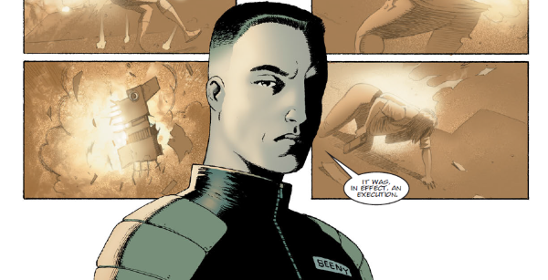

Judge America Beeny is the (DNA) child of terrorist America Jara and famous singer Bennett Beeny. However, at the time of conception, America Jara was brain dead. Afterwards, Bennet (who was not able to sing anymore after being wounded in the throat) had his brain transferred into the body of America Jara to carry on his career and bring to term his own daughter.
Art by Colin MacNeil & Chris Blythe
| Story Title | Parts | Pages | w indicates a wraparound coverCovers | Year(s) | Issues | Writer | Artist | Colourist | Letterer |
|---|---|---|---|---|---|---|---|---|---|
From AmericaFading of the Light | 6 | + 4 credit pages48 | M3.20: Colin MacNeil M3.23: Colin MacNeil M3.25: Cliff Robinson 3 | 1996 | M3.20-M3.25 | John Wagner | Colin MacNeil | Alan Craddock | Annie Parkhouse |
From Judge DreddCadet | 3 | 30 | M250: Cliff Robinson M252: Karl Richardson 2 | 2006 | M250-M252 | John Wagner | Colin MacNeil | Chris Blythe | Annie Parkhouse |
From Judge DreddThe Facility | 1 | 6 | Colin MacNeil 1 | 2007 | 1546 | John Wagner | Colin MacNeil | Chris Blythe | Annie Parkhouse |
From Judge DreddThe Secret of Mutant Camp 5 | 2 | 12 | 0 | 2007 | 1547-1548 | John Wagner | Colin MacNeil | Chris Blythe | Annie Parkhouse |
From Judge Dredd Full title: "Emphatically Evil: The Life And Crimes of PJ Maybe".Emphatically Evil | 7 | 42 | 1569: Simon Davis 1572: Cliff Robinson 2 | 2008 | 1569-1575 | John Wagner | Colin MacNeil | Chris Blythe | Annie Parkhouse |
From Judge DreddBacklash | 6 | 36 | 1630: Jon Davis‑Hunt 1 | 2009 | 1628-1633 | John Wagner | Carl Critchlow | <-- | Annie Parkhouse |
From Judge DreddTour of Duty | 6 | 36 | 1653: Dave Taylor 1 | 2009 | 1650-1655 | John Wagner | Colin MacNeil | Chris Blythe | Annie Parkhouse |
From Judge Dredd Main subtitle: "Tour of Duty".The New Deal | 1 | 6 | 0 | 2009 | 1657 | John Wagner | Mike Collins | Chris Blythe | Annie Parkhouse |
From Judge Dredd Main subtitle: "Tour of Duty".Pink Eyes | 5 | 30 | 1659: Neil Roberts 1 | 2009 | 1659-1663 | John Wagner | Mike Collins | Chris Blythe | Annie Parkhouse |
From Judge Dredd Main subtitle: "Tour of Duty".The Talented Mayor Ambrose | 13 | 78 | 1681: Ben Willsher 1684: Cliff Robinson 2 | 2010 | 1674-1686 | John Wagner | John Higgins | Sally Hurst | Annie Parkhouse |
From Judge Dredd Main subtitle: "Tour of Duty".Mega-City Justice | 7 | 42 | 1690: Greg Staples 1 | 2010 | 1687-1693 | John Wagner | Carlos Ezquerra Hector Ezquerravarious | <-- | Annie Parkhouse |
From Judge DreddJudgement Call | 1 | 12 | 0 | 2010 | M300 | John Wagner | Colin MacNeil | Chris Blythe | Annie Parkhouse |
From Judge Dredd Main subtitle: "Day of Chaos".Elusive | 6 | 36 | 1753: Paul Marshall & Abigail Bulmer 1 | 2011 | 1753-1758 | John Wagner | Henry Flint | Chris Blythe | Annie Parkhouse |
From Judge Dredd Main subtitle: "Day of Chaos".The Assassination List | 6 | 36 | 1759: Clint Langley 1763: Henry Flint 2 | 2011-2012 | 1759-1763, 1764 | John Wagner | Leigh Gallagher | Chris Blythe | Annie Parkhouse |
From Judge Dredd Main subtitle: "Day of Chaos".Eve of Destruction | 20 | 120 | 1768: Ben Willsher 1770: Leigh Gallagher 1776: Chris Weston 1781: Henry Flint 1783: Karl Richardson 5 | 2012 | 1765-1784 | John Wagner | Henry Flint: 1‑5, 11‑16 Ben Willsher: 6‑10 Colin MacNeil: 17‑20 various | Chris Blythe | Annie Parkhouse |
From Judge Dredd Part of the Day of Chaos arc.Chaos Day | 2 | 12 | 1787: Jon Davis‑Hunt 1 | 2012 | 1787-1788 | John Wagner | Henry Flint | Chris Blythe | Annie Parkhouse |
From Judge Dredd Part of the Day of Chaos arc.The Days After | 1 | 6 | 0 | 2012 | 1789 | John Wagner | Henry Flint | Chris Blythe | Annie Parkhouse |
From Judge DreddWastelands | 5 | 30 | 1837: Chris Weston 1841: Dave Taylor 2 | 2013 | 1837-1841 | John Wagner | Dave Taylor | <-- | Annie Parkhouse |
From Judge DreddBlock Judge | 10 | 61 | 1904: Alex Ronald 1908: Greg Staples 2 | 2014 | Reprints: M396 (supplement)1900-1909 | John Wagner | Carlos Ezquerra | <-- | Annie Parkhouse |
From Judge DreddTerror Rising | 3 | 30 | 366: Colin MacNeil 1 | 2015 | M365-M367 | John Wagner | Colin MacNeil | Chris Blythe | Annie Parkhouse |
From Judge Dredd Part of the Every Empire Falls arc. Followed by: ‑ Dust to Dust in the Meg. ‑ The Lion's Den in the prog.The Grindstone Cowboys | 5 | 30 | 1975: Brendan McCarthy 1 | 2016 | 1973-1977 | Michael Carroll | Colin MacNeil | Len O'Grady | Annie Parkhouse |
From Judge Dredd Part of the Every Empire Falls arc. Preceded by The Grindstone Cowboys in the prog. Followed by From the Ashes in the Meg.Dust to Dust | 3 | 30 | 0 | 2016 | M371-M373 | Michael Carroll | Henry Flint | <-- | Annie Parkhouse |
From Judge Dredd Part of the Every Empire Falls arc. Preceded by The Grindstone Cowboys in the prog.The Lion's Den | 8 | 48 | 1981: Jon Davis‑Hunt 1 | 2016 | 1978-1985 | Michael Carroll | PJ Holden | Adam Brown | Annie Parkhouse |
From Judge Dredd Part of the Every Empire Falls arc. Preceded by The Lion's Den in the prog.Reclamation | 5 | 30 | 1986: Tom Foster 1990: Jake Lynch 2 | 2016 | 1986-1990 | Michael Carroll | Colin MacNeil | Len O'Grady | Annie Parkhouse |
From Judge DreddMachine Law | 8 | 48 | 2115: Cliff Robinson and Dylan Teague 2119: Luke Preece 2121: Steven Austin and Chris Blythe 3 | 2019 | 2115-2122 | John Wagner | Colin MacNeil | Chris Blythe | Annie Parkhouse |
From Judge DreddGuatemala | 8 | 48 | 2153: Dylan Teague 1 | 2019 | 2150-2157 | John Wagner | Colin MacNeil | Chris Blythe | Annie Parkhouse |
From Judge DreddCarry the Nine | 4 | 24 | 0 | 2020 | 2200-2203 | Rob Williams Arthur Wyattvarious | Boo Cook | <-- | Annie Parkhouse |
From Judge DreddThe Victims of Bennett Beeny | 3 | 36 | M426: Tim Napper 1 | 2020 | M424-M426 | John Wagner | Dan Cornwell Colin MacNeilvarious | Chris Blythe | Annie Parkhouse |
| year | episodes | pages |
| 1994 | 0 | 0 |
| 1995 | 0 | 0 |
| 1996 | 6 | 48 |
| 1997 | 0 | 0 |
| 1998 | 0 | 0 |
| 1999 | 0 | 0 |
| 2000 | 0 | 0 |
| 2001 | 0 | 0 |
| 2002 | 0 | 0 |
| 2003 | 0 | 0 |
| 2004 | 0 | 0 |
| 2005 | 0 | 0 |
| 2006 | 3 | 30 |
| 2007 | 3 | 18 |
| 2008 | 7 | 42 |
| 2009 | 18 | 108 |
| 2010 | 21 | 132 |
| 2011 | 11 | 66 |
| 2012 | 24 | 144 |
| 2013 | 5 | 30 |
| 2014 | 10 | 61 |
| 2015 | 3 | 30 |
| 2016 | 21 | 138 |
| 2017 | 0 | 0 |
| 2018 | 0 | 0 |
| 2019 | 16 | 96 |
| 2020 | 7 | 60 |
| 2021 | 0 | 0 |
| 2022 | 0 | 0 |